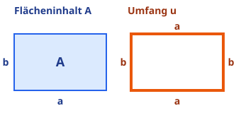

Flächeninhalt und Umfang von Rechteck und Quadrat
Mit einem KI-Tutor lernen
Ein KI-Tutor erklärt dir diese Seite und hilft dir bei den Aufgaben. Wähl deinen Assistenten:
Mit Claude öffnen Mit ChatGPT öffnen Mit Mistral Vibe öffnen
Du nutzt dein eigenes Konto beim Anbieter. Der Assistent ist kein Angebot von lernapps.net: lernapps liefert nur Inhalte und Aufgaben. Die Wahl gilt für alle Seiten, nur auf diesem Gerät.
Ziel: Ich kann Flächeninhalt und Umfang von Quadrat und Rechteck berechnen. Du brauchst dafür das Einmaleins und die Einheiten, die gleich wiederholt werden.
Das brauchst du hier
Längen misst du in mm, cm, dm und m. Eine Fläche misst du in Quadraten: 1 cm² ist ein Kästchen 1 cm × 1 cm. Ein Volumen misst du in Würfeln: 1 cm³ ist ein Würfel mit 1 cm Kantenlänge.
| Größe | Einheiten | Faktor |
|---|---|---|
| Länge | mm, cm, dm, m | 10 |
| Fläche | mm², cm², dm², m² | 100 |
| Volumen | mm³, cm³, dm³, m³ | 1000 |
Warum 100? Ein Quadrat 1 dm × 1 dm ist 10 cm × 10 cm groß, also 1 dm² = 100 cm². Beim Würfel kommt noch die Höhe dazu: 1 dm³ = 10 · 10 · 10 cm³ = 1000 cm³.
Probier zuerst
Aufgabe
Lösung
Richtige Antwort: 15 cm²
Es sind 3 Reihen mit je 5 Kästchen, also 3 · 5 = 15 Kästchen. Das sind 15 cm².
Reihen mal Kästchen
Oben liegen 3 Reihen mit je 5 Kästchen: 3 · 5 = 15. Das klappt bei jedem Rechteck mit der Länge und der Breite . Der Flächeninhalt sagt, wie viele Einheitsquadrate hineinpassen. Der Umfang ist die Länge des Randes, einmal ganz herum: zwei Längen und zwei Breiten.

Links zählt, was innen liegt: der Flächeninhalt. Rechts zählt der Rand: der Umfang.
Quelle: eigene Zeichnung. Lizenz: CC-BY-4.0.Ein Quadrat ist ein Rechteck mit vier gleich langen Seiten .
Ein Beispiel
Ein Zimmer mit Tür
Ein Zimmer ist 5 m lang und 3,5 m breit. Wie viel Boden brauchst du? Und wie viel Fußleiste, wenn die Tür 1 m breit ist? Der Boden ist eine Fläche, die Fußleiste läuft am Rand entlang.
Antwort – Du brauchst 17,5 m² Boden und 17 m − 1 m = 16 m Fußleiste, denn an der Tür gibt es keine.
Fläche oder Rand?
Merke
Der Flächeninhalt zählt Quadrate, darum hat er die Einheit cm² oder m². Der Umfang ist eine Länge, darum cm oder m. Frag dich bei jeder Aufgabe: Geht es um das, was innen liegt, oder um den Rand?
Jetzt du
Aufgabe
Lösung
8 m
Die Zahl stimmt, aber m ist eine Einheit für Längen.
12 m
12 m ist der Umfang, also der Rand: 2 · 4 + 2 · 2.
8 m² richtige Antwort
4 · 2 = 8, gemessen in Quadratmetern.
Fläche heißt Länge mal Breite, in m².
Aufgabe
Drei Beispielaufgaben, jede mit ihrer Lösung:
Aufgabe Nr. 1
Ein Rechteck ist 18 cm lang und 2 cm breit. Wie groß ist sein Flächeninhalt?
Tipp
Wie viele Reihen mit wie vielen Kästchen passen hinein?
Lösung
- Mit a = 18 cm und b = 2 cm:
- – das Rechteck hat 36 cm².
Richtige Antwort: 36 cm²
Aufgabe Nr. 2
Ein Rechteck ist 10 cm lang und 8 cm breit. Wie groß ist sein Flächeninhalt?
Tipp
Wie viele Reihen mit wie vielen Kästchen passen hinein?
Lösung
- Mit a = 10 cm und b = 8 cm:
- – das Rechteck hat 80 cm².
Richtige Antwort: 80 cm²
Aufgabe Nr. 3
Ein Rechteck ist 14 cm lang und 12 cm breit. Wie groß ist sein Flächeninhalt?
Tipp
Wie viele Reihen mit wie vielen Kästchen passen hinein?
Lösung
- Mit a = 14 cm und b = 12 cm:
- – das Rechteck hat 168 cm².
Richtige Antwort: 168 cm²
Aufgabe
Drei Beispielaufgaben, jede mit ihrer Lösung:
Aufgabe Nr. 1
Um ein rechteckiges Beet, 7 m lang und 4 m breit, soll ein Zaun. Wie lang wird der Zaun?
Tipp
Geh in Gedanken einmal um das Beet herum. Welche Seiten kommen vor?
Lösung
- Mit a = 7 m und b = 4 m:
- – der Zaun wird 22 m lang.
Richtige Antwort: 22 m
Aufgabe Nr. 2
Um ein rechteckiges Beet, 2 m lang und 11 m breit, soll ein Zaun. Wie lang wird der Zaun?
Tipp
Geh in Gedanken einmal um das Beet herum. Welche Seiten kommen vor?
Lösung
- Mit a = 2 m und b = 11 m:
- – der Zaun wird 26 m lang.
Richtige Antwort: 26 m
Aufgabe Nr. 3
Um ein rechteckiges Beet, 13 m lang und 10 m breit, soll ein Zaun. Wie lang wird der Zaun?
Tipp
Geh in Gedanken einmal um das Beet herum. Welche Seiten kommen vor?
Lösung
- Mit a = 13 m und b = 10 m:
- – der Zaun wird 46 m lang.
Richtige Antwort: 46 m
Aufgabe
Drei Beispielaufgaben, jede mit ihrer Lösung:
Aufgabe Nr. 1
Ein Quadrat hat den Umfang u = 36 cm. Wie groß ist sein Flächeninhalt?
Tipp
Ein Quadrat hat vier gleich lange Seiten. Wie lang ist eine?
Lösung
- Mit u = 36 cm: Jede der 4 Seiten ist u : 4 lang.
- Seite mal Seite ergibt den Flächeninhalt: 81 cm².
Richtige Antwort: 81 cm²
Aufgabe Nr. 2
Ein Quadrat hat den Umfang u = 52 cm. Wie groß ist sein Flächeninhalt?
Tipp
Ein Quadrat hat vier gleich lange Seiten. Wie lang ist eine?
Lösung
- Mit u = 52 cm: Jede der 4 Seiten ist u : 4 lang.
- Seite mal Seite ergibt den Flächeninhalt: 169 cm².
Richtige Antwort: 169 cm²
Aufgabe Nr. 3
Ein Quadrat hat den Umfang u = 24 cm. Wie groß ist sein Flächeninhalt?
Tipp
Ein Quadrat hat vier gleich lange Seiten. Wie lang ist eine?
Lösung
- Mit u = 24 cm: Jede der 4 Seiten ist u : 4 lang.
- Seite mal Seite ergibt den Flächeninhalt: 36 cm².
Richtige Antwort: 36 cm²
Aufgabe
Lösung
Richtige Antwort: Die Aussage stimmt nicht.
1 cm × 5 cm und 3 cm × 3 cm haben beide 12 cm Umfang, aber 5 cm² und 9 cm² Fläche.
Aufgabe
Lösung
Richtige Antwort: 96 m²
Für zwei Breiten bleiben 40 − 24 = 16 m, eine ist 8 m. Fläche – 12 · 8 = 96 m².
Als Nächstes halbierst du ein Rechteck – und bekommst so die Formel für das Dreieck.
Fehler gefunden oder eine Idee für diese App?